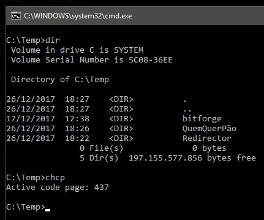
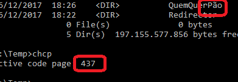
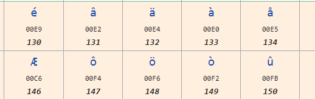
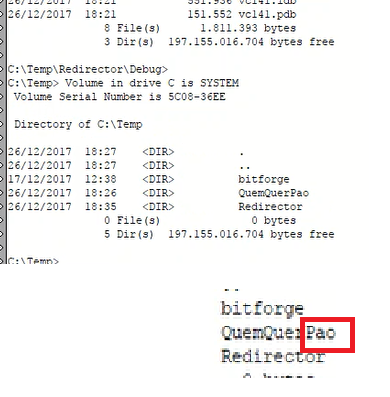
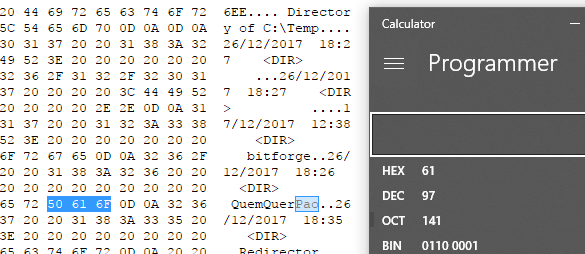
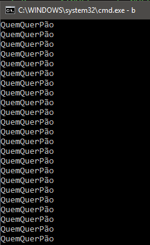
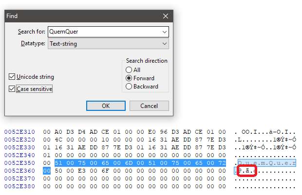

- Lumière! A Aventura Começa
- Mulheres Divinas
- 13 Reasons Why
- Lucky
- Pela Janela
- Com Amor Van Gogh
- O Poder e o Impossível
- Batman: O Retorno
- Assassinato no Expresso do Oriente
- A Origem do Dragão
- Algo de Novo
- Star Wars: Os Últimos Jedi
- Se você não precisa de classe você não precisa de classe
- Cmd e o encoding fake
- Erased: Piloto
# Lumière! A Aventura Começa
Caloni, 2017-12-02 <cinemaqui> <cinema> <movies> [up] [copy]"Lumière! A Aventura Começa" entra nos arquivos dos inventores do cinematógrafo para descobrir onde surgiu o Cinema. Sim, porque a criação dos irmãos Lumière, assim como o cinetoscópio de Thomas Edison, ou qualquer outra invenção maluca da época, não era muito mais que isso: uma invenção maluca. Um entretenimento qualquer. E uma das muitas aventuras que estavam por vir no século seguinte.
O Cinema como arte surgiu em um momento depois, e foi uma nova descoberta: a linguagem cinematográfica. Era possível se expressar de maneira diferente dos habituais textos, pinturas, esculturas, peças e fotografias. As invenções da época foram diferentes formas de "asfalto" para que novos "veículos" trafegassem por ele, em uma época onde imperavam as charretes. Ou uma analogia mais direta: foram inventadas letras para que as pessoas pudesses usar palavras.
A proposta deste filme é apresentar a arte engatinhando. Não apenas nas mãos dos Lumière, mas de seus operadores de câmera também. Os criadores do cinematógrafo mandavam seus operadores apontar suas câmeras para cenas do cotidiano, cenários históricos e alguma ficção. Seu limite era uma câmera que precisava ficar parada no chão e os 50 segundos de limite do rolo de filme.
O resultado: mais de 1400 filmes em menos de 10 anos. A maioria desse conteúdo se perdeu no tempo, mas boa parte foi restaurada e remasterizada no formato digital. Este filme apresenta -- pasmem -- 108 filmes dessa época, que compreende entre os anos de 1896, a invenção do cinematógrafo, até 1905. E ele se torna, assim como o último Metrópolis exibido depois da restauração feita com cenas redescobertas, um pedido de desculpas à humanidade pela perda lastimável de um tesouro histórico e artístico.
Essas desculpas chegam nos cinemas com uma narração (original) em francês que explica o contexto das gravações, aponta um ou outro elemento em cena e faz uma pequena interpretação, resenha ou até uma crítica do resultado. É como adentrar em um museu com um trabalho fenomenal de guia, além de um fundo musical inspirado, que recria sensações de pequenos pedaços de História em película. O narrador vai além do que o espectador médio vai, falando sobre travellings, enquadramento e a sofisticação dos operadores. Além de muitos, muitos golpes de sorte de momentos que aconteceram enquanto a câmera estava filmando.
Mas ao mesmo tempo este é um filme fácil, para as massas. Como os Lumière sempre desejaram. O narrador explica detalhes técnicos, sim, mas de uma maneira tão didática, guiando os olhos do espectador sobre as circunstâncias da filmagem, o momento historico, etc. O que serve, junto da diversão de ver as primeira filmagens da história, como uma introdução a um estudo tímido mas eficaz de Cinema. O narrador compara um enquadramento com a marca registrada de um diretor japonês. Em outro momento estabelece ligação entre uma criança vestida de forma pomposa e o movimento impressionista do pintor Auguste Renoir.
Não há muito o que falar da arte do filme em si, essa colagem histórica formatada com a dedicação que o material merece. Apenas que seu resultado é inestimável. Se trata do nascimento de uma invenção que todos nós adoramos. O perfeito reflexo da Revolução Industrial e a consequência do avanço tecnológico que mudou radicalmente aquela realidade que vemos em proporção 1.33 em um quase quadrado com cantos arredondados, emoldurado pra presente. Um presente que todo cinéfilo deveria ser grato por poder receber.
# Mulheres Divinas
Caloni, 2017-12-03 <cinemaqui> <cinema> <movies> [up] [copy]Mulheres nas ruas com placas de protesto dizendo "não somos animais de estimação". Queima de sutiãs em praça pública. Amor livre sob o efeito de drogas. Calças boca de sino. Para quem não conhece muito bem os detalhes por trás do movimento feminista dos anos 70 pode achar tudo um grande exagero. E Mulheres Divinas vem aí atualizar a cartilha das pessoas e até das atuais feministas, demonstrando todo o mecanismo por trás de por que, afinal de contas, as mulheres reclamavam tanto para lavar louça.
E esse mecanismo possui detalhes que ninguém sente, mas estão aí. Os homens mandam e desmandam na sociedade, mas isso é o estado natural das coisas (pelo menos para eles). Eles nasceram para mandar e elas nasceram para cuidar. Está na Bíblia. Fim de papo.
O problema é quando uma pequena semente é plantada na cabeça de Nora (Marie Leuenberger), uma dona de casa em um vilarejo isolado da Suíça. Em plena revolução social nas grandes cidades, esse vilarejo é o microcosmos que irá explicar o que está acontecendo no mundo de maneira simples e didática. E como toda mudança, ela começa com uma ideia.
Nora se sente entediada com os afazeres do lar e sente o desejo de trabalhar fora para mudar um pouco de ares. Observamos também o mundo em que ela está inserida através de seus lindos olhos. Ela comenta com o marido sobre trabalhar fora no dia em que ele é promovido a gerente onde trabalha. Não há a necessidade de mais dinheiro para a família. Se trata apenas do desejo de uma mulher de mudar um pouco sua vida.
Da união entre as ideias que permeiam seu mundo e da sua insatisfação com tudo aquilo nasce o movimento feminista na minúscula região. Novas causas vão se juntando, como a liberdade de uma jovem em sair com quem quiser, ou a pauta política mais recente: o direito das mulheres de votar. Gerações se unem, alianças se formam. Cada mulher nesse filme representa uma necessidade de mudança ou reparação, e por serem até certo ponto estereotipadas, elas representam as diferentes esferas que iniciaram o movimento feminista daquela época.
A direção de Petra Volpe é feita da forma mais convencional possível. É um filme que não se interessa em chamar atenção para si mesmo, exceto em alguns momentos cômicos. Escolhido como o filme para representar a Suíça no Oscar, o roteiro, também de Volpe, é muito mais poderoso que a narrativa do filme, que é tedioso e burocrático. A história se torna muito mais fascinante de acompanhar, pois nela observamos os intrincados mecanismos de poder que revelam ao espectador que o movimento social que vai se desenvolvendo é muito mais político que ideológico.
Ou pelo menos era. Antes mulheres não podiam votar e precisavam da aprovação do homem para tomar qualquer decisão de suas vidas. Seu comportamento estava sendo monitorado todo tempo e era controlado pelo marido/pai. Não havia liberdade de pensamento, quem dirá de ação. E o longa de Petra Volpe nos explica tudo isso com uma produção decente, trilha sonora da época (e épica, como "You Don't Own Me" de Lesley Gore) e uma direção de arte e figurino que se diverte menos do que devia com os estereótipos da época. A parte mais catártica do filme é uma reunião de lunáticas onde se venera o órgão sexual feminino como o terceiro olho.
E tudo isso serve de cartilha para o movimento feminista de hoje, que é seu exato oposto. Se preocupando mais com ideias do que ações (talvez porque as ações hoje em dia sejam inócuas; se luta pelo quê?). Então, de certa forma, enquanto Mulheres Divinas realiza um trabalho impressionante em destrinchar o passado do feminismo de maneira fácil e acessível ao espectador, que entende o movimento através das motivações das personagens (elas precisam aprovar o voto feminino para conseguir mudar leis machistas), ao mesmo tempo revela a futilidade dos movimentos nos dias de hoje (berrar quando homens abrem as pernas em transporte público), e cuja motivação pode ser medida pela mesma atitude dos homens daquela época. Quando uma mãe diz aos seus filhos que a partir de agora eles irão lavar a própria louça, um deles responde com um misógino "mas eu sou homem!".
Agora imagine a mesma cena com os gêneros trocados hoje em dia e entenderá como o filme escancara o problema do mundo hoje: pessoas que estejam dispostas a lavar a louça sem reclamar. E se lavassem a louça ficariam menos dispostas a reclamar da vida como se ela devesse algo para elas, mas se houvesse algo de fato a reclamar, elas quebrariam a louça. Homens e mulheres.
# 13 Reasons Why
Caloni, 2017-12-07 <cinema> <series> [up] [copy]Essa novelinha pré-adolescente consegue ser bem irritante às vezes. Não é uma produção barata nem tosca. Muito pelo contrário. Há muitas virtudes narrativas em um trabalho que parece descartar apenas uma virtude dentre as que escolheu: coerência. E é através dessa "pequena" falha que podemos concluir que, apesar de tecnicamente interessante e artisticamente bonito, "13 Reasons Why" é uma merda colossal que revela que esta geração tem pouquíssimas chances de sobreviver a eles mesmos.
Felizmente os jovens possuem cada dia menos acesso ao porte de material perigoso como armas, drogas e palavriado pesado. Certo? E quando algo é desagradável basta ignorar; quando é relevante voltamos ao "precisamos falar sobre". No começo da história a paranóia dos adultos com o suicídio de uma garota soa familiar. Há uma mobilização da escola e dos pais em tentar conversar com seus estudantes e filhos afim de evitar que isso aconteça de novo. Todos temem o sistema em que estão inseridos. Talvez porque todos nós já tivemos vez ou outra a vontade de nos matar. Enquanto isso, os jovens parecem já ter assimilado perfeitamente esse acontecimento, exceto o mais problemático Clay Jensen. Sempre prática, a série de animação South Park sempre usou dessa receita para demonstrar como uma situação inofensiva nas mãos dos adultos vira uma tempestade sem fim. E nesse sentido, Clay já é um adulto.
O garoto problemático que não aceita bem o suicídio de Hannah Baker estava no fundo apaixonado ou pelo menos fascinado por ela. Ele é um dos últimos a receber uma série de fitas cassetes gravadas pela suicida hipster antes de cometer seu ato final. Em cada lado das 13 fitas, que começam 12, ela acusa um dos jovens da escola a ser um dos motivos pelo qual ela se matou. Acompanhamos sua narração enquanto este garoto lesado e lerdo tenta ouvir as fitas até o final. A fórmula de dramalhão mexicano em que ele para e reinicia a escutar as fitas enquanto busca saber onde ele é citado não funciona muito aqui, pois é uma fórmula batida feita para encher linguiça e tentar aguçar um ou outro "mistério" não resolvido. É preciso lembrar que as reações dos outros jovens convenientemente só começam a refletir em suas realidades conforme este garoto avança nas fitas, o que acaba tornando tudo muito artificial.
No entanto, nem só de maniqueísmo é feita a série. A interação entre esses jovens é a parte mais interessante da história, pois ilustra de maneira levemente realista e sem muitos rodeios como funciona a vida pré-adulta, além de apresentar diferentes jovens e seus estilos em performances competentes. E diga-se de passagem, essa dinâmica se torna ainda mais interessante se por comparação formos acompanhar a história de Hannah a partir de seus causos nas fitas. Ela é uma pessoa neutra, sem personalidade, que se machuca fácil, mas que insiste em tentar alguma coisa. Ela parece estar em uma crise de depressão, mas isso seria simples demais para a série. Sem nunca conseguir entender suas emoções e como lidar com elas, continua saindo de casa porque acha (eu acredito) que eventualmente vai acabar tudo bem. Tudo são especulações, já que ninguém parece conhecer de fato Hannah. Nem mesmo Clay, que trabalhou com ela por um tempo.
Mesmo com o eterno problema da falta de comunicação permeando essas pessoas, jovens e seus pais, jovens entre jovens, a série demonstra alguns traços nada agradáveis em comum no garoto e na garota: ambos frequentemente parecem se sentir juízes divinos que caíram do céu a julgar os atos de todos os outros jovens e adultos da história. Exceto eles mesmos. Eles nunca estão errados ou parecem ocupados demais para um auto-julgamento, já que, sempre cheios de razão (ou emoção), fazem sempre questão de expressar que algo precisa ser feito, muito embora nenhuma das sugestões de quem está ouvindo-os reclamar sejam aceitas como válidas. O que me faz abordar o tema óbvio que a série busca explorar: o nosso mundo do politicamente correto, da justiça social e como tudo isso infecta a mente dos jovens a ponto de realizar uma lavagem cerebral. Não só Hannah e Clay são afetados, mas todo mundo é educado a não dizer certas palavras para não ofender as pessoas.
Mas nada disso impede que o bullying ocorra. Ele sempre vai ocorrer, pois sempre existirão pessoas mais fracas que outras. As pessoas mais fracas da sociedade perecem, queira você as proteger de palavras e ações ofensivas ou não. Porém, agora elas têm uma "arma": podem tentar fazer justiça verbal enquanto sofrem em silêncio, definhando em um mundo que lhe dá as costas justamente por serem um pé-no-saco. Ah, a ironia.
A história é retratada em um formato flashbacks integrados à narrativa atual, de forma que vemos Clay passeando pelos lugares que Hannah passeou mentalmente conforme foi compondo as fitas. A direção conjunta de seis diretores trouxe uma incrível coesão visual, com uma montagem elegante que respeita a inteligência do espectador. Às vezes nos perdemos, momentaneamente, mas o efeito de passar de passado a presente todo o tempo de maneira charmosa, utilizando elementos em cena, vozes, luzes e quadros, traz tudo à tona na mente de Clay de forma tão vívida, e a fotografia é tão cinzenta comparada com a Hannah e seus últimos dias, que parece fazer valer toda a lenga-lenga da série.
Mas infelizmente este projeto está podre por dentro. Ele quer que acreditemos que suicídio pode ser resolvido "se todos nós nos tratarmos melhor"; a mesma fórmula que o SJW tem proposto para aparentemente todos os problemas do mundo (até a fome). E com base nesse moralismo do século 21 "13 Reasons Why" descreve com precisão repugnante como a mente de pessoas funciona nesta sociedade que tenta proteger seus membros simplesmente não falando sobre. Porém, quando uma série decide fazer isso, torna tudo muito, muito pior. Assim como o resto dos movimentos sociais em voga, essa história não conclui nada positivo, mas arrisca sugerir que Hannah Baker, além de estar em seu direito, estava certa. E o sentimento geral é de que todos os SJWs do mundo poderiam seguir o seu mesmo caminho, e o mundo seria um lugar melhor.
# Lucky
Caloni, 2017-12-07 <cinemaqui> <cinema> <movies> [up] [copy]No princípio não havia nada. Havia uma tartaruga. Não. Um cágado. O cágado segue andando em seu ritmo. Havia também um velho. E o velho também segue andando. Lucky é seu nome, e consequentemente seu filme. Porém, este é um filme que palavras se cruzam. E significados. Dessa forma, "lucky" em inglês quer dizer sortudo, o que pode querer dizer que este pode ser o filme sobre o que é ser sortudo. E do ponto de vista de todos nós que vivemos, estar vivo é ser sortudo. Estar vivo e testemunhar o último filme de Harry Dean Stanton com a presença do diretor David Lynch atuando. E você sabe que a coisa é séria quando vemos Lynch dizer: "existem algumas coisas no mundo que são maiores que todos nós... e um cágado é uma delas!".
Você pode estar agora achando esta introdução longa e sem sentido. Mas sentido é algo que Lucky sabe que depende muito do ponto de vista. O velho todos os dias faz seu exercício de ioga, fuma cerca de um maço de cigarro e bebe leite, café. E álcool. Uma ou outra Bloody Mary. Seu médico não vê sentido nele fumar tanto e ter seus pulmões intactos. "É uma anomalia genética", conclui seu "diagnóstico". E o mundo do velho, todo certinho, agora tem um ponto cego: ele não sabe por que tem a saúde perfeita e um dia desses caiu no chão. E isso o faz ter medo. Basicamente é sobre isso o filme.
Agora você deve estar achando que não vai sair de casa para ver um filme que é sobre um velho e sua rotina. Ainda mais sabendo que não existe nenhum drama aqui em ser velho. Nem em ser sozinho. Lucky explica desde o começo com suas palavras cruzadas. Sozinho é estar consigo mesmo. Diferente de ser solitário. Ele aceita o significado da palavra realismo e seu resumo: "realismo é uma coisa". Ou como pessoas incultas diriam: as coisas como elas são. Porém, note que as coisas como elas são para mim é diferente das coisas como elas são para você. Nas sábias palavras de Lucky, que precisam ser ditas em inglês: "what you see is not what I get".
Você pode até não gostar de filmes lentos, mas este também possui alguns dos melhores momentos e falas do ano. É o último filme do ator Harry Dean Stanton, que faz Lucky, a saúde de ferro, e faleceu três meses atrás, aos 91 anos, e o primeiro filme de outro ator de longa carreira, John Carroll Lynch. Através das palavras de dois atores em seu primeiro roteiro acompanhamos uma história que não contém muita tensão, conflito ou drama. Caminhamos pela rotina de Lucky algumas vezes porque é nela que encontraremos os ensinamentos, da mesma forma que acompanhamos a caçada de Anton Chigurh em Onde Os Fracos Não Têm Vez não pelo seu final, mas pelo que encontramos no caminho.
Repare como a atmosfera de "Lucky" nos entrega uma história realista, que pode estar acontecendo neste exato momento em qualquer cantinho desse planeta, ou desta galáxia ou universo, mas ao mesmo tempo ela (a atmosfera) está carregada de ensinamentos que vamos aprendendo aos poucos, e onde um causo sozinho não tem tanta importância se não for analisado pelo todo. É como quando Lucky senta-se na lanchonete que sempre vai com Tom Skerritt, que faz um veterano do exército. Ele se impressiona com a sorte do sujeito, que trabalhou em um navio-cargueiro sem nunca ser abatido na Segunda Guerra, e se impressionou também quando viu uma garota japonesa sorrindo para ele em uma história que revela o que estamos procurando neste filme que não vai a lugar algum e está em todo lugar.
Pegue também, por exemplo, o sumiço da tart... cágado do vizinho, Howard (David Lynch). Ele se chama Presidente Roosevelt (o cágado). Ele surgiu do nada, não possui importância em si exceto pelas piadas com o presidente americano e pela óbvia analogia com o velho Lucky. E quando ele contrata um advogado para fazer o seu testamento, ou até para que o inconsolável dono faça um dos melhores discursos do filme, contando como o cágado carrega nas costas o seu próprio caixão. A forma com que coisas são ditas em "Lucky" é natural, mas no momento em que são ditas ganha-se uma aura de importância.
Este filme foi feito com uma aura de velho. Seus letreiros amarelos e grandes, e sua trilha sonora, baseada na gaita de Lucky e uns arranjos em torno do próprio vilarejo, além do rádio que ele sempre liga de manhã. Sua fotografia possui tons estelares e um tanto poéticos, com o escuro do bar salpicado de azul e dourado, o branco do consultório do médico, da mercearia onde Lucky sempre compra leite, ou a poeira cósmica que vai e vem pelas ruas da cidade. Assim como Lucky. No fim do dia, observamos no horizonte essas mesmas cores, mas no céu.
Alguns vão dizer que este é um filme parado que não vai para lugar algum. Esses alguns vão ter toda a razão. E a resposta para isso está no próprio filme. Não cabe a ninguém, nem o filme, dizer o sentido de tudo isso. As coisas são como são. Realismo é uma coisa. Estar assistindo a este filme, um verdadeiro privilégio.
# Pela Janela
Caloni, 2017-12-08 <cinemaqui> <cinema> <movies> <miniviews> <fragments> [up] [copy]Ela extrai uma personagem do cotidiano e some no processo. Inspiração em pessoa sem dizer uma palavra. Tem início um road movie humilde, ligado às raízes culturais do brasileiro, suas estradas, seus hotéis, seu modo de ver a vida. Rosália vira a itinerante em um processo de resgate de sua humanidade.
# Com Amor Van Gogh
Caloni, 2017-12-09 <cinema> <movies> [up] [copy]O que foi feito neste Loving Vincent é um trabalho curioso, quase fascinante e que merece uma visita pelo menos. Eles pegam a história em torno da morte do pintor moderno Vincent Van Gogh e montam um thriller no estilo Agatha Christie, meio teatral e meio noir, mas com toques artísticos e dramáticos porque se trata da história de um artista renomado. A grande propaganda deste filme é que todos os seus quadros foram "pintados à mão", no mesmo estilo do pintor, o que torna o filme um trabalho adaptado da obra do artista. É um trabalho de fundo verde e de 100 pintores. Algo único, com certeza. Mas uma obra de arte?
Os esforços técnicos são de fato fascinantes. É preciso prestar atenção à história para não se perder nas diferentes formas de compor uma cena neste filme. Os traços de pintura a óleo parecem vivas, e as transições para flashbacks, as mais comuns, o fazem de um tom de cores para monocromático, mas com uma fumaça que lembra os traços do movimento das luzes nas obras do pintor. Os personagens da história são personagens em alguns dos seus 800 trabalhos. Há momentos que existe movimento em 3D, do cenário, mas em sua maioria são fundos de tela em 2D, o que não deixa de ser impressionante. Os atores se vestem como nos quadros, mas seus rostos serão estilizados depois. Efeitos como chuva, transparência e movimentação pela rua são feitos de forma com que os traços componham a energia que passa pelo mundo. É um filme enxergado pelo filtro de realidade do pintor moderno.
Tudo isso é fascinante, e a história do filme não é boba, mas contém alguns efeitos dramáticos e misteriosos, o que deixa tudo devidamente suspenso para que o espectador se interesse pelo desenrolar da narrativa ao mesmo tempo que quer ver mais sobre a produção do filme. Isso se torna um misto entre curiosidade técnica e criação de novas sensações de se ver um filme. Isso lembra Sin City, mas de uma maneira mais intensa.
A questão é que os diretores estreantes Dorota Kobiela e Hugh Welchman conseguem montar tudo devidamente e com muita competência, mas a narrativa tem um limite. A história é engessada, e não é surpreendente. Ela se adequa ao que os idealizadores gostariam que fosse feito no nível técnico. O filme se aproxima do experimental embora tenha os traços de uma produção comercial (incluindo a língua inglesa). As "dublagens" dos atores é de primeira linha. Aliás, é possível se falar em dublagem aqui, sendo que eles são atores de carne e osso sendo estilizados para o mundo Van Goghiano?
Douglas Boot é Armand Roulin, filho do carteiro que entregava as inúmeras cartas trocadas entre Van Gogh e seu irmão. Ele pretende revisitar a cidade onde ambos estavam e ambos pereceram para entender o que aconteceu. Lá ele conhece pessoas das mais pitorescas, e cada uma lhe dá uma visão diferente do que houve no melhor estilo Cidadão Kane. A música de Clint Mansell é bonita, mas dá sono por insistir no mesmo toque (já que a história não anda). Melhor se sai Daniela Faggio e a criação de arte de todos os diferentes ambientes onde se passa a história. Isso unicamente com a fotografia de Tristan Oliver e Lukasz Zal, que usam praticamente as mesmas paletas do "autor original", se tornam um destaque plástico e artístico do projeto.
É preciso pensar muito para entender o que é Com Amor Van Gogh. É um experimento ou um filme? Ou os dois? O que isso muda na arte? Talvez seja apenas fruto de marketing, mas a ideia original é muito poderosa e tem muito a oferecer... apenas para este filme. É um momento único do Cinema. E por isso ele tem a chance de se tornar especial mesmo sem ter algo de fato muito duradouro. Um filme experimental que é bom ao ponto de não parecer experimental. A sensação de uma arte sendo transposta em outra. Existirá ainda os conceitos das sete artes?
# O Poder e o Impossível
Caloni, 2017-12-09 <cinemaqui> <cinema> <movies> [up] [copy]Esse é um filme que teria de tudo para não dar certo, ser clichezão, etc. Ele lembra 127 horas, mas enquanto James Franco não é um exemplo de empatia o ator Josh Hartnett atinge a glória ao nos preocuparmos com seu destino, mesmo que na neve ele seja um completo idiota.
E, sim, essa é a ideia que quiseram passar para caracterizar o jogador de hóquei Eric LeMarque. Ele é um idiota, comeria até neve se pudesse (ao contrário do que se poderia pensar, ela desidrata em vez de ajudar na sede). Ele está isolado em uma cabana na neve, faz snow boarding para se manter ativo, e é viciado em drogas em recuperação gradual. O mundo fica mais focado depois que ele ingere da substância, em uma ótima ideia para tornar isso visível para o espectador.
Falei que a história lembra 127 horas porque assim como o filme de Danny Boyle, o esportista aqui vem de uma história real e fica preso em uma situação de vida ou morte. Conforme o tempo passa surgem os flashbacks sobre sua infância dura com o pai abusivo e sua relação de amor e ódio com o hóquei. E também nesse sentido a história encaixa melhor, já que o nosso passado geralmente tem a ver com nosso presente. E no formato de filme isso evita longas exposições, o que tornaria o drama atual fraco demais.
E o ator Josh Hartnett se aproveita de todas as oportunidades em que ele sente dor. Sua perna está contundida porque ele é um idiota, tinha se trancado do lado de fora de sua cabana e arrombou a porta com os pés descalços. Isso em um frio de 10 graus negativos é um senhor incômodo, mas a menos trinta é a certeza de morte. Assim também o vê a gerenciadora de riscos e resgate Sarah (Sarah Dumont), que só descobre que há alguém sumido em sua região alguns dias depois. Mira Sorvino faz a mãe do rapaz, a única pessoa que o apoia. A única amiga.
O roteiro do estreante Madison Turner se aproveita do livro do próprio LeMarque e Davin Seay e conta uma história que vai apresentando os acontecimentos no gelo dia após dia que demonstra como quando praticamente tudo que pode dar errado dá errado ficamos entre a vida e a morte. Claro que a todo momento o longa frisa que de fato LeMarque é um completo ignorante sobre sobrevivência no gelo, e que graças à sua garra e sua vontade de viver ("não posso deixar que ela (a mãe) me veja assim") é que ele vai durando mais tempo do que deveria.
Mas se não fosse pelo diretor Scott Waugh este filme seria bem sessão da tarde. Graça a ele e sua escolha da mise en scene somos levados a crer em toda a desorientação do rapaz, em como o frio interfere em nosso julgamento, em como a fome nos faz tomar más decisões e em como aos poucos nossa humanidade vai sendo drenada pela mãe natureza e sua fúria irracional. Tudo em volta de LeMarque está contra ele, e ele não possui nada, exceto sua força de vontade, para continuar existindo.
Mas ele é drenado aos poucos, e Waugh sabe disso. Sua cara vai queimando aos poucos. Sua perna vai ficando vermelha aos poucos. Ela apodrece. Ele come um pedaço dela. O desespero do rapaz é crescente. Não explode de repente. E é em um determinado momento que o filme demonstra todo seu potencial dramático sendo aproveitado: LeMarque está deitado. O quadro é um plano-detalhe extremamente próximo do seu rosto cheio de gelo, queimaduras e sua pouca barba. Seu pelo no rosto forma uma "cena" pitoresta que lembra os pinheiros na neve. LeMarque se transformou na neve. Ele está completamente tomado. É um momento solitário, silencioso e dramático não porque a música insiste, mas porque a situação simplesmente não poderia ser diferente.
O Poder e o Impossível é um filme forte e tenso. Não é uma história com um final feliz tão fácil assim. É um ritual de passagem. Talvez para um amadurecimento. Isso não fica totalmente claro. Mas é menos de sobrevivência e mais de compreensão do que é a vida. Se para isso LeMarque teve que ressuscitar, é algo que se deixa para a interpretação do espectador.
# Batman: O Retorno
Caloni, 2017-12-10 <cinema> <movies> [up] [copy]O tom gótico e fantasioso de Batman é algo a se considerar quando tentamos enxergar a lógica por trás dessas adaptações de Tim Burton para o Cinema. A nossa mente suscetível ao fantástico pode querer interpretar criaturas como Mulher-Gato ou Pinguim como criações semelhantes a Homem-Aranha. Mas não se engane: são distúrbios psicológicos inseridos em uma distopia randiana onde os melhores são os piores. A máxima "dog eats dog" gera aberrações como Joker, Catwoman, Penguim e, claro, o Homem-Morcego.
Investindo muito mais no visual do que na narrativa, "Batman: o Retorno" é uma continuação do primeiro filme onde Batman já está estabelecido como uma espécie de justiceiro com moral duvidosa (ele pode fazer bem ou mal aos cidadãos de "Gothic" City). A cidade onde tudo passa lembra uma versão de Metropolis onde Ayn Rand fez parte das decisões arquitetônicas. Vemos estátuas gigantes exaltando o homem, com feições que lembram o jogo BioShock, e na prefeitura a figura icônica de Atlas erguendo o mundo. Este é um mundo onde crueldades podem ser feitas e ninguém liga, como assassinar uma secretária pela conveniência ou jogar seu próprio filho defeituoso no esgoto.
Para os que chegaram dos trabalhos de Christopher Nolan, este universo não lhe pertence. Tente imaginar uma versão diferente de Batman, que também existe nos quadrinhos. A versão televisiva dos anos 60 misturado com a mente criativa/doentia de Burton em torno da arte plástica dos conceitos teatrais por trás das capas de seus heróis e vilões.
Michael Keaton (Birdman) se resume apenas em observar. Ele está tão fascinado quanto nós mesmos. Pelo menos suas sobrancelhas dizem isso. Seu Bruce Wayne é digno de respeito, mas seu Batman é apenas uma fantasia de luxo. E ele nem está na frente da competição quando Selina Kyle e Pinguim vestem suas personas.
Burton através do roteiro de Daniel Waters tenta aqui repetir o feito do primeiro filme, ligando política com grotesco (algo banal) e consequentemente a impunidade e a distorção de valores da sociedade. Pinguim se candidata a prefeito da cidade apoiado pelo grande corporativista que quer fazer uma obra faraônica com o dinheiro do povo. Danny DeVito e Christopher Walken se dão bem em suas caricaturas, assim como Michelle Pfeiffer e DeVito trocam momentos extremamente embaraçosos (e que não são feitos para crianças).
Aliás, se há aqui uma atuação que ainda não chegou a ser atingida é a de Pfeiffer como Selina Kyle. A escolha de Anne Hathaway na versão de Nolan a deixa completamente apagada (embora realista). Aqui Pfeiffer se diverte imensamente, e talvez complemente a única mensagem decente o filme inteiro: feminismo. Ela é massacrada por todos os lados, defende uma donzela em apuros e ainda comenta para ela: "você deixa as coisas tão fáceis para o Batman, não?". É mais heroína que todos os homens deste filme juntos. O lado felino/sedutor de Kyle atinge seu máximo quando a vemos pular entre prédios sem medo de morrer. Ela de fato acredita ter algumas vidas de sobra. E ela vive como se estivesse completamente liberta das amarras de uma cidade presa a conceitos bem definidos de bem ou mal.
Mas enquanto isso o filme de Tim Burton quer completar o arco do Pinguim, que sequer é um arco. A sensação é de que o filme viu o surgimento do Pinguim, assim como o Coringa do filme anterior, como a consequência da existência do Batman. DeVito está bem à vontade em seu papel. Ele não tem medo nenhum do grotesco aqui. Ele o abraça, mesmo que sua maquiagem o impeça de se mover muito. Mas note como isso é uma vantagem. Ele se move como um Pinguim!
"Batman: O Retorno" envelheceu mal. Mas continua sendo um belo filme. Ele é sutil em detalhes que os filmes de Nolan gritam (como a insistência de Alfred para que seu patrão arruma uma companhia) e não-sutil em seu plot megalomaníaco (como deve ser). Enfim, um filme de Tim Burton sobre super-heróis e super-vilões. Muito dark para as crianças de hoje em dia. Talvez até para as daquele dia.
# Assassinato no Expresso do Oriente
Caloni, 2017-12-11 <cinema> <movies> [up] [copy]Hercule Poirot de Kenneth Branagh sem dúvida alguma é uma das melhores caracterizações do personagem de Agatha Christie. Olhe seu perfeito e grandioso (e simétrico!) bigode. Ouça seu sotaque belga definindo sua personalidade através do seu rápido raciocínio e sua maneira de enxergar o mundo. "Existe o certo e o errado. E no meio não há nada." Tire este Poirot e a história e produção irão rápido demais para o filme terminar são e salvo.
Bom, esta segunda reencarnação nos cinemas do livro homônimo da Rainha do Crime tenta subverter sua noção (e a de Poirot) de que só há o certo e o errado. Como consequência distorce a alma do próprio detetive, compensando as "almas fraturadas" a bordo de um luxuoso embora apertado trem. Neste filme não se trata de fazer justiça, pois a noção de justiça é subvertida pelos tempos atuais, concluindo que de fato há alguma coisa entre o certo e o errado: o... bom senso?
Com um elenco de luxo, como foi no filme original (Sidney Lumet, 74), acompanhamos uma viagem interrompida por um acidente de percurso que revela um não-acidente: o assassinato de um contrabandista e falsificador (Johnny Depp, o que está fazendo aqui?). Este farsante, vamos descobrir, também é um sequestrador e assassino do filho de um importante militar. Os detalhes da trama vão sendo revelados ou descobertos aos poucos, e um certo senso de impotência cerca o melhor detetive do mundo.
Não vale a pena analisar os personagens secundários, pois eles são meras caricaturas, faladores dos diálogos escolhidos pelo roteirista Michael Green (Logan), que no primeiro ato do filme se interessa absurdamente pela personalidade do detetive belga, para depois passar para uma corriqueira e burocrática listagem dos eventos que sucedem após o Orient Express finalmente partir. O protagonista desta história deveria ser Poirot, mas ele perde foco antes do crime sequer ser cometido.
Certo de que os espectadores de hoje em dia, várias gerações de fãs da escritora britânica, desconhecem a trama e seus segredos -- uma ingenuidade sem tamanho -- o filme é incapaz de se aproveitar do óbvio ululante de que todos na sala já sabem o desenrolar da história ou, se não sabem, com certeza não conseguirão descobri-la no espaço de alguns minutos. Dessa forma, o processo de investigação é monótono, desnecessariamente complexo, cheio de detalhes que podem até tentar dar o ar de desorientação que o verdadeiro detetive teve nas páginas do livro, mas no fundo parece apenas desorientar o próprio espectador na esperança de que ele não revele o clássico mistério.
Além disso, o elenco de luxo pouco pode fazer, já que suas falas e participações são mínimas e estão reservadas apenas para que nós não confundamos quem é quem. Mas é claro que com Tom Bateman, Josh Gad, Johnny Depp, Judi Dench, Willem Dafoe, Penélope Cruz e Michelle Pfeiffer no elenco fica difícil misturar as pessoas. De certa forma esta é uma peça teatral cinematográfica, já que todos os detalhes que cercam a trama original foram resumidas em caras, bocas e falas peculiares. Todo o elenco está exagerado para chamar a atenção para si mesmo, o que é um grave defeito em um filme cujo desenrolar vai revelando que cada um tem parte de culpa no cartório.
Prejudicado ainda pela péssima decisão de fabricar quase todos os cenários em computador, seja o Paquistão, a estação de trem, o próprio Orient Express ou as montanhas majestosas de gelo pelo caminho, o filme é plástico demais, e oferece algumas falhas de fotografia que inserem personagens em torno de um cenário com paletas levemente diferentes, dando a impressão dele estar destacado do todo. Isso acontece principalmente porque as cores estilizadas do interior do trem ou do cenário externo não bate com a escolha dos diferentes figurinos dos personagens, cujas cores e tons variam enormemente. Portanto, ao usar efeitos digitais o filme não consegue realizar a mistura de cores necessárias para que toda a ação soe pelo menos real.
Além disso, tanto a trilha sonora clichê, chupinhada das séries enlatadas policiais dramáticas da Netflix, quanto decisões específicas do roteiro, que colocam Hercule Poirot em duas sequências de ação que fariam Agatha Christie se apunhalar nas costas 12 vezes, retiram toda a aura clássica e peculiar das tramas da escritora inglesa para um filme policial pseudo-dramático genérico. É divertido observar algumas brincadeiras e mexidas na história original, desde que ela tenha um motivo. E o motivo para praticamente todas as alterações da equipe de Branagh me escapam.
Ainda assim, com graves defeitos de produção, roteiro e direção (Branagh está obcecado em mostrar a ação de todos os ângulos possíveis, retirando o mistério da trama), Assassinato no Expresso do Oriente ainda consegue se tornar forte pela sua trama principal, mesmo que já saibamos seu desfecho. E mesmo que o filme faça uma brincadeira incabível entre os personagens e A Santa Ceia (o humor do diretor escapa ao senso comum) o filme ainda consegue concluir com uma certa dignidade.
Dignidade essa que foi obtida por uma distinta dama décadas atrás, através da observação perspicaz dos costumes da alta nobreza, nos inserindo em crimes e mistérios cuja graça não era apenas tentar desvendá-los, mas observar as criaturas grotescas que a aristocracia britânica fabricava com tanta naturalidade. Essa seria uma melhor crítica social do que focar em racismo e nazismo, algo tão batido hoje em dia.
# A Origem do Dragão
Caloni, 2017-12-14 <cinemaqui> <cinema> <movies> <miniviews> <fragments> [up] [copy]O filme enxerga mais beleza nesses personagens, o que dizem e fazem, do que a forma como lutam. Ele vem para se purificar de um pecado que cometeu por orgulho e encontra um Bruce Lee e toda sua vaidade erguendo os pilares que o tornarão referência no mundo todo. O mal existe aqui de maneira caricata para que os mocinhos, nas palavras do mestre Lee, "chutem seus traseiros". O mestre que veio de Shaolin, Wong Jack Man (Yu Xia), diz que o estilo é como uma prisão. Eu concordo com ele, mas que bela prisão são os estilos de kung fu!
# Algo de Novo
Caloni, 2017-12-14 <cinema> <movies> [up] [copy]Esta comédia italiana sobre o mundo feminino de meia-idade brinca entre os estereótipos da moça séria que quer achar o cara sério depois da desilusão de sua vida e sua amiga mãe solteira que fala em poder ficar sem encostar nos homens como um copo de uísque para um alcoólatra. Sua maior virtude são as duas atrizes por trás dessas duas "garotas" problemáticas. Elas são especialistas em fazer comédia. Não são exageradas além do limite apesar de conhecer os limites para comédias românticas. O rapaz que contracena com elas está aí para mostrar o oposto, de que o exagero sempre prejudica o equilíbrio das relações.
Mas não podemos culpá-lo, são seus hormônios. Ele tem 20 anos a menos que as moças com quem se relaciona.
Criando uma comédia de situação no começo para depois desenvolvê-la como dois romances paralelos, o filme da diretora Cristina Comencini quer divertir com muita música e diálogos engraçados. Quase todas as piadas são eficientes, apesar de batidas. A participação das atrizes faz toda diferença. Principalmente uma delas que canta como ninguém. Seus números são sempre diferentes e dialogam com sua melhor amiga, embora ela nunca falaria isso diretamente, mesmo conversando no celular por horas a fio. Sua amiga pode ser resumida na cena onde a vemos sendo perseguida no elevador por um tio de moicano fascinado por ela. Ela não lembra dele, mas ele lembra muito bem dela. E não será o único no filme. Ela é a perfeita amante: com amnésia. Mas por algum motivo faz os homens sempre voltarem. Apesar de nossa era liberal, não deve estar fácil achar mulheres maduras boas de cama.
Já a cantora faz o que é esperado que faça depois da desilusão com um tocador de saxofone: se manter distante, frígida e com o cabelo preso (apesar de linda). Ela se dedica à sua amiga, a única relação que está funcionando. Ela gosta de dar conselhos para ela apesar de não ter nenhum para si mesma. Mas uma brincadeira inocente faz com que ela fique com um dos amantes de sua amiga. Provavelmente o mais jovem deles. A juventude então a faz voltar a estar viva. Bem viva.
A inversão de papéis que é feita nesse ménage acidental soa clichê, mas diverte. Uma comédia leve que passa rápido. Acidental, não tem muito o que dizer. Apenas ser engraçadinha e esquecível.
# Star Wars: Os Últimos Jedi
Caloni, 2017-12-14 <cinema> <movies> [up] [copy]Uma série de filmes que mantém uma mitologia sobre uma energia vital no Universo por décadas precisa ser atualizada de tempos em tempos para não perder o compasso com a Ciência. Se na primeira trilogia a Força era algo mais espiritual e na segunda trilogia algo mais biológico, essa terceira trilogia acertadamente a coloca como nem uma coisa nem outra: é algo metafísico. E com isso estabelece pela primeira vez uma base que se pode trabalhar com as diferentes camadas de realidade. Não só mais falamos sobre política em SW (essa dualidade esquerda/direita já cansou), mas sobre filosofia, moral, valores, etc. Quem diria que Star Wars chegaria em sua fase adulta?
Um dos traços mais fascinantes do universo de Star Wars nos cinemas reside em sua compreensão cada vez maior do que começou a ser criado na década de 70. Nascido das super-produções fantasiosas que pipocavam por todos os lados (espaciais ou não), e estabelecendo-se como um marco no Cinema de entretenimento e arte, o universo de George Lucas faz 40 anos e continua impressionando seu público contemporâneo e ainda respeitando seu público antigo (e isso sem contar os que pegaram carona no meio do caminho). Mas isso não quer dizer que é necessário que os erros da franquia tenham que estar sempre lá. Esqueçamos os midichlorians por um instante, pois este não chega nem a estar perto de Jar Jar Binks na lista dos piores tropeços.
E por falar em tropeços, nessa série eles são aglutinados, sofrem transformação e renascem como algo melhor. A própria figura do Jar Jar Binks pode ser vista aqui como um C3PO mais contido (que é o lugar para um personagem como ele). E os midichlorians viraram algo que apenas um Jedi no final de um arco poderia capturar. Foram necessárias várias aventuras para que Luke Skywalker conseguisse se provar não apenas como um acidente da natureza messiânico, mas como o mentor de toda a "congregação" que representa o equilíbrio do Universo. E é claro que a participação especial de outro Jedi especial na saga é uma surpresa bem-vinda pelo potencial de fechar amarras.
A impressão geral da experiência é que não só alguns aspectos renascem reinterpretados; filmes inteiros também. O Episódio VII poderia ser entendido como uma mistura entre os Episódios IV e V, e este oitavo faz com que pensemos nele como um reboot do V, pelo seu clima pesado e dramático (pelo menos até o ponto em que Star Wars consegue ser dramático). Porém, além de se tornar um "Contra-Ataca Reloaded", ele quebra vários paradigmas que refletem a época em que vivemos (insegurança sobre o que é certo e errado). E apenas para citar algo do terceiro ato sem incorrer em spoilers, imagine o peso que a revelação sobre os pais de um certo personagem podem ter em uma série como essa que pega tanto na questão da herança de sangue, e reflita agora sobre a decisão do roteirista. Ele não está tentando repetir memórias ou torná-las recicladas, mas fazendo o fã refletir e questionar algo já estabelecido por vários filmes.
E isso é apenas um minúsculo exemplo do que o trabalho de Rian Johnson faz aqui. Diretor e único roteirista deste Episódio VIII, o cineasta responsável por algumas das melhores partes da série Breaking Bad além do ótimo Looper mostra que é possível sim apostar na novidade em algo já estabelecido. Aliás, talvez esse seja o caminho para sairmos do marasmo de grandes produtoras de fantasia como a Marvel. Claro que EpVIII mantém o mesmo formato, os mesmos letreiros, fade-ins, fade-outs, histórias paralelas, heróis desconhecidos, etc. Porém, observe as diferenças: surgem novas questões a respeito da luta dos rebeldes contra o Império, novas formas de enxergar o lugar que os Jedi têm nessa história, e até novas maneiras que as pessoas enxergam esta guerra e o que ela significa.
Toda essa miscelânea de conceitos tinha sido adiada por vários filmes que foram apenas acumulando mitologia e sua história até chegarmos no Despertar da Força. Agora é a hora de recontar lendas e conquistar um novo público, mantendo o atual. Algo que "Os Últimos Jedi" consegue de ponta a ponta em sua história. Esta é a união entre o velho e o novo para seguirmos adiante em uma história paralisada por mais do mesmo por muito tempo. Cansados de lutas de sabre de luz medíocres, truques de batalha já vistos em outros filmes e revelações que beiram o novelístico ("eu sou seu pai"; ainda que funcionem), EpVIII suspende tudo isso iniciando vários arcos entre vários personagens ao mesmo tempo, conseguindo a proeza de contar uma história de guerra sobre os mais diversos pontos de vista tendo o mesmo peso cada um deles. Aqui acompanhamos não apenas as decisões dos comandantes e capitães, mas também dos pilotos, dos místicos, dos androides, das criaturas, de diferentes camadas sociais, e até de uma mecânica (Kelly Marie Tran, uma revelação), que protagoniza toda a síntese do que os criadores deste filme querem dizer. É dela também a fala que sintetiza isso: "devemos parar de destruir o que odiamos e abraçar o que amamos".
Justiça fosse feita, todos os quesitos técnicos de Star Wars seriam indicados e premiados este ano. Começando pela fotografia (incluindo direção de arte e figurino) que consegue juntar diferentes mundos sob a mesma dualidade entre luz (cores quentes, sol e poeira das naves defasadas dos rebeldes) e trevas (cores frias, penumbra, vermelho e lugares sanitizados como as naves do Império). E terminando na trilha sonora (incluindo uma edição de som vibrante), que utiliza um John Williams que foi feito para trabalhos melodramáticos e poderosos como esse. Além do mais, justiça seja feita novamente, ao menos a edição deveria ser reconhecida, pois não é fácil conseguir não apenas dar o mesmo peso às diferentes questões e personagens que praticamente nunca se encontram durante o filme inteiro, mas saber impor ritmo para linhas do tempo paralela de forma com que elas se complementem sem destoar do conjunto da obra (Bob Ducsay também é o editor de Looper, e isso quer dizer alguma coisa sobre a cena da escada).
Mas tudo isso seria inútil caso o roteiro de Rian Johnson não respeitasse o espectador e fosse entregando todas as respostas para os mistérios (por que os Jedi devem acabar?) com estardalhaço e diálogos expositivos. São as ações os argumentos mais válidos desta aventura, pois vários precisam se sacrificar. E são o que eles dizem que dão valor ao que fazem (mas as melhores cenas do final não precisa-se que nada seja dito). E note como depois de horas e mais horas de universo Star Wars ele ainda consegue impactar com a mesma fórmula dramática (os momentos-chave que você com certeza vai lembrar quando sair do cinema), embora elas nunca sejam repetitivas.
Star Wars pode ter feito aqui o seu melhor trabalho. Sim, melhor que Contra-Ataca. Não porque possui o roteiro mais intrincado, ou as cenas mais memoráveis ou os efeitos, direção e virtudes técnicas mais impecáveis. Sim, ele possui tudo isso. Mas o que o torna uma experiência acima de todas as outras é a sua capacidade de ressurgir das cinzas com o mesmo conceito criado há 40 anos atrás em um formato que o faz soar autêntico, ambicioso, provocador e ainda digno de seus fãs mais ferrenhos. Ele ainda se beneficia do acaso, inserindo a cena mais memorável entre Luke e Leia justo no momento que a atriz Carrie Fisher dá adeus ao mundo. E para ela com certeza não existiria melhor homenagem do que este filme.
# Se você não precisa de classe você não precisa de classe
Caloni, 2017-12-17 <computer> [up] [copy]Nos últimos dias me deparei com o seguinte (pseudo-)código:
int main(int argc, const char **argv)
{
MyClass obj;
HRESULT hr = obj.init();
if ( SUCCEEDED(hr) )
{
if ( args have "cmd1" )
{
hr = obj.cmd1();
}
else if ( args have "cmd2" )
{
hr = obj.cmd2();
}
... // você entendeu a ideia
}
}
Dentro de MyClass a seguinte estrutura:
class MyClass
{
public:
HRESULT m_result = S_OK;
HRESULT init();
HRESULT cmd1();
HRESULT cmd2();
// você pegou a ideia
};
Então eu me pergunto: qual a função da classe em um código desses?
Bjarne Stroustrup desde o começo, em seu livro [The C++ Programming Language], sugere que C++ não é uma linguagem unicamente orientada a objetos, mas multi-paradigmas. Hoje, em 2017, ela é uma linguagem genérica e até funcional. Na época poderia ser usada como orientada a objetos, mas também como estruturada e imperativa comum. O goto funciona até hoje.
Então o erro no código acima é supor mecanicamente que como é C++ precisa ter classe.
Não. O código não precisa ter uma classe. No entanto, seu código precisa ter classe. Entendeu?
Ter classe é para poucos. É para programadores que se preocupam com a relação entre funcionalidade, estilo, arquitetura e todos os inúmeros elementos que tornam um código perfeito. Para ser perfeito, um código precisa levar em conta tantos elementos que apenas um programador acordado, obsessivo, fora da matrix, conseguiria observar o que deve ser feito.
Uma pequena sugestão:
#include <map>
int main(int argc, const char **argv)
{
MyMap cmds;
if ( SUCCEEDED(init()) )
{
cmds[args];
}
}
HRESULT init();
HRESULT cmd1();
HRESULT cmd2();
// você pegou a ideia
É a melhor solução? Não. Só uma ideia para tornar o código simples de entender, enxuto para manter, com apenas o modelito básico. Tem até um map para evitar encher de ifs. Mas não precisaria se você tem meia-dúzia de funções.
E note que eu disse funções, não classe. E é possível ter classe sem classes.
# Cmd e o encoding fake
Caloni, 2017-12-26 <computer> [up] [copy]Qualquer um que já tenha mexido no prompt de comandos do Windows sabe que ele permite você escolher qual code page utilizar para enviar e receber comandos. O Windows é todo em UTF-16, mas as saídas podem vir de qualquer programa com qualquer encoding. A missão do cmd.exe é usar o encoding escolhido pelo usuário para exibir os caracteres na tela. Vamos supor que nós criemos uma pasta com acentos no nome (pelo Explorer para não ter erro):
Agora através de um cmd.exe podemos observar como esse nome acentuado aparece:
Note como o "a" acentuado com til aparece perfeitamente. Também note que o codepage utilizado é o 437.
Até aí tudo bem, certo?
__Não! Não! Não!__
O codepage 437 não possui ã. Nem õ.
Isso, meus amigos, é chamado tecnicamente na área de "muito louco".
Curioso a respeito disso, resolvi observar a saída padrão do cmd.exe, para ver o que diabos vem como resultado. Para isso desenvolvi um simples output redirector tabajara:
#include <Windows.h>
int main(int argc, char* argv[])
{
DWORD ret = ERROR_SUCCESS;
SECURITY_ATTRIBUTES sa = { 0, NULL, TRUE };
STARTUPINFOA si = { sizeof(si) };
PROCESS_INFORMATION pi;
CHAR cmd[4096] = "cmd.exe";
SECURITY_ATTRIBUTES saAttr;
saAttr.nLength = sizeof(SECURITY_ATTRIBUTES);
saAttr.bInheritHandle = TRUE;
saAttr.lpSecurityDescriptor = NULL;
si.dwFlags = STARTF_USESTDHANDLES;
si.hStdOutput = CreateFileA("cmd.log", GENERIC_WRITE, FILE_SHARE_READ, &sa, CREATE_ALWAYS, 0, NULL);
si.hStdError = si.hStdOutput;
if( si.hStdOutput != NULL && si.hStdOutput != INVALID_HANDLE_VALUE )
{
if (CreateProcessA(NULL, cmd, NULL, NULL, TRUE, CREATE_NEW_CONSOLE, NULL, NULL, &si, &pi))
{
WaitForSingleObject(pi.hProcess, INFINITE);
CloseHandle(pi.hThread);
CloseHandle(pi.hProcess);
}
CloseHandle(si.hStdOutput);
}
}
Simples, bonito e prático. Quando executamos Redirector.exe ele executa um cmd.exe, com a diferença que a saída dele vai parar no arquivo cmd.log, que podemos observar com um BareTail da vida.

__Opa, opa, opa!__
O til sumiu!
Se formos analisar os bytes que vieram de saída, vamos constatar que o byte referente ao __ã__ foi enviado para a saída padrão como o byte 0x61, ou 97 em decimal. No codepage 437 (e em qualquer derivado da tabela ASCII, na verdade) o byte 97 é representado como "a", simplesmente, sem til.
Isso quer dizer que ao receber um "ã" o cmd.exe o reinterpreta como "a", mesmo estando sob o encoding 437. Esse é o resultado de um prompt user friendly que quer seu amigo.
Se analisarmos a memória do cmd.exe veremos que ele armazena as coisas em UTF-16, como qualquer programa Windows nativo unicode.
@echo off :beg dir /b c:\temp\quemquer* goto beg 
E com isso constatamos que não necessariamente no Windows, What You See Is What You Get. Ou, em termos mais filosóficos, What You See Is Not What I Get.
# Erased: Piloto
Caloni, 2017-12-27 <cinema> <series> [up] [copy]Esta é uma série fantástica baseada tão fortemente em um mangá e anime que ele pode ser o delírio do fã das obras originais ou atiçar a curiosidade do cinéfilo. Por que a curiosidade? Se observarmos os movimentos de câmera, a forma de disposição dos personagens e dos elementos em cena perceberemos que esta obra continua sendo um anime em forma.
Em conteúdo também. A narração dos pensamentos e sentimentos do herói é a típica adaptação narrativa que o Ocidente faz para o Oriente. Além disso a noveliza, para que o telespectador de celular perceba detalhes óbvios como quem é a mãe do personagem. Ao mesmo tempo cria situações extremamente improváveis, como alguém que acabou de acordar de um acidente e pergunta pra sua colega de trabalho por que ela trabalha. Ela responde: para realizar um sonho. Isso é tão atípico que só pode ser um programa da TV de domingo.
Mas voltemos aos movimentos de câmera. Eles vão deslizando de lado em cenários com elementos animados. Às vezes são crianças brincando com balões coloridos, às vezes um trem surge perfeitamente ao fundo. Essa elementos ficam lindos em animações. Já neste live action com pouca inspiração em sua fotografia soa plástico, inventado. Esses detalhes fazem o cinéfilo pensar pra que tudo isso ou se isso quer reproduzir o anime e se tornar querido pelos fãs.
Aliás, já notou como os eventos especiais do protagonista acontecem em um lugar aberto com as pessoas distribuídas de maneira uniformemente caótica? Parece uma praça ou uma rua cinematográfica ou quadros estáticos onde os talentosos desenhistas irão inserir elementos móveis.
A história é criativa e pode ser interessante: o rapaz que não gosta da mãe por perto e tenta fazer seu mangá ter sucesso tem um poder: ele volta no tempo (um pouquinho só) quando algo ruim vai acontecer. Este algo ruim pode ser evitado por ele. Este é um acontecimento que ele não tem controle. Ou tem, como vimos próximo do final. Nunca saberemos se a regra dos roteiristas vai se formando pela conveniência ou por um intrincado jogo de causa e efeito como em Steins;Gate. Mas eu chuto pelo primeiro.
A história gira em torno do acontecimento fantástico. O nosso herói tem uma personalidade que tanto faz. Ele é o centro de acontecimentos fantásticos e ponto. Ao final do episódio uma reviravolta que quebra uma certa regra, e está lançado o gancho para espectadores apaixonados por animes apreciarem um anime desenhado usando pessoas de carne e osso e balões de verdade.
[2017-11] [2018-01]